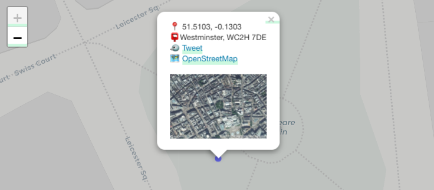
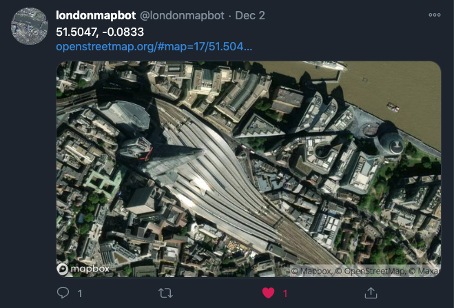
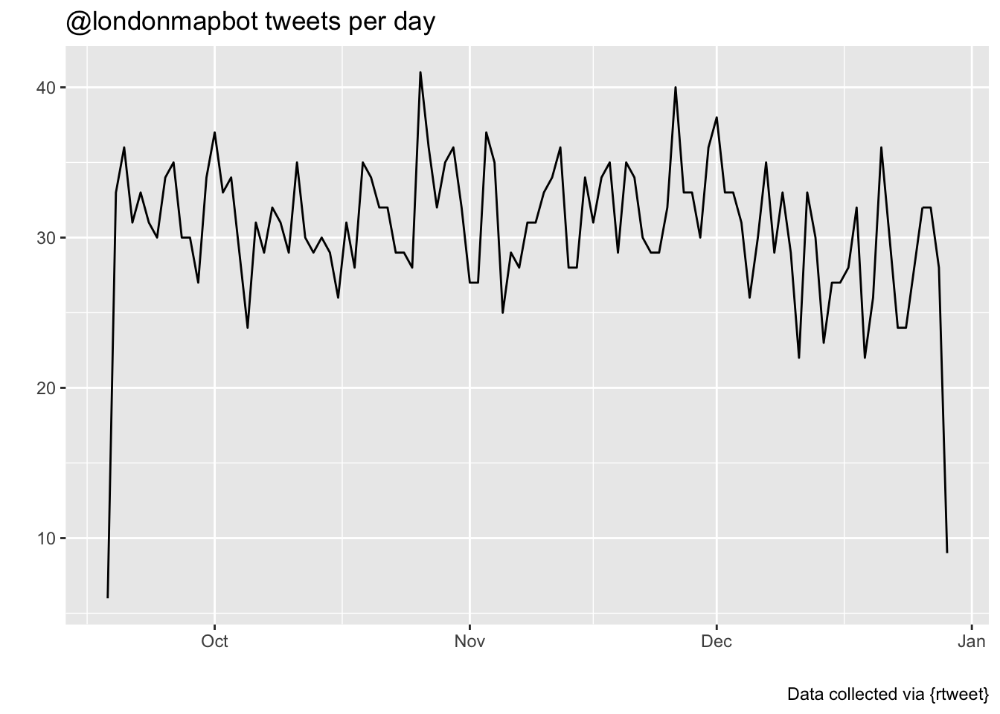
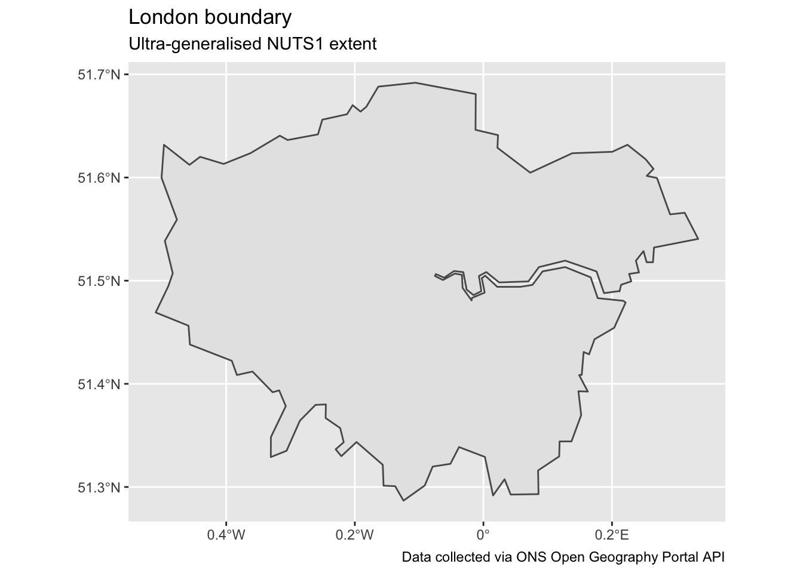

suppressPackageStartupMessages({
library(tidyverse)
library(rtweet)
library(sf)
library(geojsonio)
library(PostcodesioR)
library(leaflet)
})
tl;dr
I recently made a Twitter bot with R, {rtweet}, MapBox and GitHub Actions – londonmapbot – that tweets images of random coordinates in London. I decided to explore them interactively by creating a simple {leaflet} map. You can jump directly to the map).
Note
Twitter changed its API terms in 2023. As a result, you probably can’t re-run the code in this blog. Read about how I moved londonmapbot to Mastodon at botsin.space/@londonmapbot because of these changes.
The bot
I built the londonmapbot Twitter bot as a fun little project to get to grips with GitHub Actions. An action is scheduled every 30 minutes to run some R code that (1) selects random coordinates in London, (2) fetches a satellite image from the MapBox API, (3) generates an OpenStreetMap URL, all of which are (4) passed to {rtweet} to post to the londonmapbot account.
The outputs have been compelling so far. The composition is usually ‘accidentally’ pleasing. Sometimes landmarks are captured, like The Shard, The Natural History Museum and V&A and Heathrow.

I was wondering whether the bot has ‘found’ other landmarks that I hadn’t noticed or whether it’s found my house. The londonmapbot source code doesn’t have a log file for all the coordinates it’s generated, so I figured the easiest way to get this information and explore it would be to grab all the tweets – which contain the coordinates as text – and then map the results.
Packages
I’m loading the tidyverse for data manipulation with {dplyr}, {tidyr} and {stringr}. {rtweet} greatly simplifies the Twitter API and the objects it returns. We’ll use it to fetch all the tweets from londonmapbot.
I’m using a few geography-related packages:
- {sf} for tidy dataframes with spatial information
- {geojsonio} to read spatial files in geojson format
- {PostcodesioR} to fetch additional geographic data given our x-y information
- {leaflet} to build interactive maps from spatial data.
A particular shoutout to rOpenSci for this post: {rtweet}, {geojsonio} and {PostcodesioR} have all passed muster to become part of the rOpenSci suite of approved packages.
Fetch tweets
{rtweet} does all the legwork to fetch and parse information from the Twitter API, saving you loads of effort.
The rtweet::get_timeline() function is amazing in its user-side simplicity. Pass the account name from which to fetch tweets, along with the number of tweets to get (3200 is the maximum).
lmb_tweets <- get_timeline("londonmapbot", n = 3200)
lmb_tweets[1:5, c("created_at", "text")] # limited preview# A tibble: 5 x 2
created_at text
<dttm> <chr>
1 2020-12-29 09:36:20 "51.5519, -0.33\nhttps://t.co/ica9ZypBLS https://t.co/5gS…
2 2020-12-29 08:59:46 "51.4392, 0.1636\nhttps://t.co/2DsbbLYIDG https://t.co/KV…
3 2020-12-29 06:28:48 "51.6773, -0.2555\nhttps://t.co/1hu2VoxCBF https://t.co/b…
4 2020-12-29 05:56:15 "51.674, -0.4042\nhttps://t.co/HMhmUVVrIn https://t.co/mP…
5 2020-12-29 05:31:03 "51.4451, 0.1058\nhttps://t.co/nWuqy4s7am https://t.co/qv…{rtweet} has a function to quick-plot tweets over time. There’s meant to be a tweet every half-hour from londonmapbot, but GitHub Actions has been a little inconsistent and sometimes fails to post.
rtweet::ts_plot(lmb_tweets) + # plot daily tweets
labs(
title = "@londonmapbot tweets per day",
x = "", y = "", caption = "Data collected via {rtweet}"
)
Extract tweet information
The dataframe returned by {rtweet} contains nearly 100 columns. For our purposes we can minimise to:
- the unique tweet identifier,
status_id, which we can use to build a URL back to the tweet - the datetime the tweet was
created_at - the tweet text content, from which we can isolate the latitude and longitude values
- the
media_urlto the MapBox image attached to each tweet - the full OpenStreetMap link in each tweet via
urls_expanded_urls
lmb_simple <- lmb_tweets %>%
filter(str_detect(text, "^\\d")) %>% # must start with a digit
separate( # break column into new columns given separator
text, # column to separate
into = c("lat", "lon"), # names to split into
sep = "\\s", # separate on spaces
extra = "drop" # discard split elements
) %>%
mutate( # tidy up variables
lat = str_remove(lat, ","),
across(c(lat, lon), as.numeric)
) %>%
select( # focus variables
status_id, created_at, lat, lon,
osm_url = urls_expanded_url, media_url
)
lmb_simple[1:5, c("status_id", "lat", "lon")] # limited preview# A tibble: 5 x 3
status_id lat lon
<chr> <dbl> <dbl>
1 1343853346478841862 51.6 -0.33
2 1343844145518026752 51.4 0.164
3 1343806154397409280 51.7 -0.256
4 1343797964645523456 51.7 -0.404
5 1343791619049480192 51.4 0.106Reverse geocode
Tweets from londonmapbot are really simple by design; they only have the latitude and longitude, a link to OpenStreetMap and a satellite image pulled from the MapBox API. It might be interesting to provide additional geographic information.
{PostcodesioR} can perform a ‘reverse geocode’1 of our coordinates. Give latitude and longitude to PostcodesioR::reverse_geocoding() and it returns a list with various administrative geographies for that point.
lmb_geocode <- lmb_simple %>%
mutate(
reverse_geocode = map2(
.x = lon, .y = lat,
~reverse_geocoding(.x, .y, limit = 1) # limit to first result
)
) %>%
unnest(cols = reverse_geocode) %>% # unpack listcol
hoist(reverse_geocode, "postcode") %>% # pull out postcode into a
hoist(reverse_geocode, "admin_district") # pull out borough
lmb_geocode[1:5, c("lat", "lon", "postcode", "admin_district")] # limited preview# A tibble: 5 x 4
lat lon postcode admin_district
<dbl> <dbl> <chr> <chr>
1 51.6 -0.33 UB6 7QT Ealing
2 51.4 0.164 DA5 2DJ Bexley
3 51.7 -0.256 WD6 5PL Hertsmere
4 51.7 -0.404 WD24 5TU Watford
5 51.4 0.106 DA15 9BQ BexleyThe object returned from the reverse geocode is a nested list that we can tidyr::hoist() the geographic information from. Here we grabbed the postcode and ‘administrative district’, which for our purposes is the London borough that the point is in.
Convert to spatial object
Right now we have a dataframe where the geographic information is stored as numeric values. We can use the {sf} package to convert and handle this information as spatial information instead.
Basically we can use {sf} to ‘geographise’ our dataframe. It can add geometry (points in our case), dimensions (XY, meaning 2D), the maximum geographic extent (a ‘bounding box’ that roughly covers London) and recognition of the coordinate reference system (‘4236’ for latitude-longitude).
The sf::st_as_sf() function performs the magic of converting our tidy dataframe into a tidy spatial dataframe. You’ll see that the print method provides us the extra spatial metadata and that our geographic information has been stored in a special geometry column with class sfc_POINT.
lmb_sf <- lmb_geocode %>%
st_as_sf(
coords = c("lon", "lat"), # xy columns
crs = 4326, # coordinate reference system code
remove = FALSE # retain the xy columns
)
lmb_sf[1:5, c("status_id", "geometry")] # limited previewSimple feature collection with 5 features and 1 field
geometry type: POINT
dimension: XY
bbox: xmin: -0.4042 ymin: 51.4392 xmax: 0.1636 ymax: 51.6773
CRS: EPSG:4326
# A tibble: 5 x 2
status_id geometry
<chr> <POINT [°]>
1 1343853346478841862 (-0.33 51.5519)
2 1343844145518026752 (0.1636 51.4392)
3 1343806154397409280 (-0.2555 51.6773)
4 1343797964645523456 (-0.4042 51.674)
5 1343791619049480192 (0.1058 51.4451)Map it
London boundary geojson
Coordinates for londonmapbot tweets are selected randomly within a rectangle roughly within the boundary of the M25 motorway. We can grab a polygon of the Greater London boundary to see which points fall within the ‘true’ extent of London.
To do this, I’m using a set of boundaries for England’s regions2 via the Office for National Statistics’s Open Geography Portal API. The polygons are ‘ultra generalised’ to be represented by very few points (every 500m). This means it doesn’t follow the exact boundary of London, but that’s okay: it’s only being used as a guide and we get the benefit of a small polygon file.
ldn_sf <- geojson_read(
paste0( # API endpoint for NUTS1 geography geojson
"https://opendata.arcgis.com/datasets/",
"01fd6b2d7600446d8af768005992f76a_4.geojson"
),
what = "sp" # read as spatial object
) %>%
st_as_sf() %>% # convert to sf object
filter(nuts118nm == "London") # London polygon only
ldn_sf[, c("nuts118nm", "geometry")] # limited previewSimple feature collection with 1 feature and 1 field
geometry type: MULTIPOLYGON
dimension: XY
bbox: xmin: -0.5097014 ymin: 51.28676 xmax: 0.3340242 ymax: 51.69188
CRS: unknown
nuts118nm geometry
1 London MULTIPOLYGON (((-0.01191868...{ggplot2} has a geom for quick-plotting of {sf} objects, so we can check the boundary.
ggplot(ldn_sf) +
geom_sf() +
labs(
title = "London boundary",
subtitle = "Ultra-generalised NUTS1 extent",
caption = "Data collected via ONS Open Geography Portal API"
)
Build map with {leaflet}
You can build up layers in {leaflet} in a similar kind of way to a {ggplot2} graphic. The base map is applied with addProviderTiles(), followed by the London boundary with addPolygons(), with the points added as circle-shaped points with addCircleMarkers().
lmb_map <- leaflet(ldn_sf, width = '100%') %>%
addProviderTiles("CartoDB.Positron") %>%
addPolygons( # generalised London boundary
color = "black", weight = 2,
opacity = 1, fillOpacity = 0.2
) %>%
addCircleMarkers( # locations as points
lng = lmb_sf$lon, lat = lmb_sf$lat, # xy
radius = 5, stroke = FALSE, # marker design
fillOpacity = 0.5, fillColor = "#0000FF", # marker colours
clusterOptions = markerClusterOptions(), # bunch-up markers
popup = ~paste0( # dynamic HTML-creation for popup content
emo::ji("round_pushpin"), " ", lmb_sf$lat, ", ", lmb_sf$lon, "<br>",
emo::ji("postbox"), lmb_sf$admin_district,
", ", lmb_sf$postcode, "<br>",
emo::ji("bird"), " <a href='https://twitter.com/londonmapbot/status/",
lmb_sf$status_id, "'>Tweet</a><br>",
emo::ji("world_map"), " ", "<a href='",
lmb_sf$osm_url, "' width='100%'>OpenStreetMap</a><br><br>",
"<img src='", lmb_sf$media_url, "' width='200'>"
)
)The markers, which are blue dots, have rich pop-ups when clicked. The information is generated dynamically for each point by pasting HTML strings with the content of the dataframe. Props to Matt Kerlogue’s narrowbotR, which uses this emoji-info layout in its automated tweets.
To keep the design simple and uncluttered, I’ve intentionally used a muted base map (‘Positron’ from CartoDB) and limited the amount of pop-up content.
In the pop-up you’ll see information from the tweet, including the satellite image and printed coordinates; URLs to the original tweet and OpenStreetMap; plus the reverse-geocoded info we got from {PostcodesioR}.
Since there are thousands of points, it makes sense to cluster them with markerClusterOptions() to avoid graphical and navigational troubles. Click a cluster to expand until you reach a marker.
The map
lmb_mapIf you can’t see the satellite photos in each pop-up you may need to change browser.
And no, it hasn’t captured my house yet!
Development
I made this for my own amusement and as an excuse to use {PostcodesioR} and reacquaint myself with {leaflet}. If I were going to develop it, I would make a Shiny app that continuously refreshes with the latest tweet information. I may revisit londonmapbot in future, or create a new bot; in which case the reverse geocoding capabilities of {PostcodesioR} could come in handy for providing more content in tweet text.
Environment
Session info
Last rendered: 2023-07-18 19:03:41 BSTR version 4.3.1 (2023-06-16)
Platform: aarch64-apple-darwin20 (64-bit)
Running under: macOS Ventura 13.2.1
Matrix products: default
BLAS: /Library/Frameworks/R.framework/Versions/4.3-arm64/Resources/lib/libRblas.0.dylib
LAPACK: /Library/Frameworks/R.framework/Versions/4.3-arm64/Resources/lib/libRlapack.dylib; LAPACK version 3.11.0
locale:
[1] en_US.UTF-8/en_US.UTF-8/en_US.UTF-8/C/en_US.UTF-8/en_US.UTF-8
time zone: Europe/London
tzcode source: internal
attached base packages:
[1] stats graphics grDevices utils datasets methods base
loaded via a namespace (and not attached):
[1] htmlwidgets_1.6.2 compiler_4.3.1 fastmap_1.1.1 cli_3.6.1
[5] tools_4.3.1 htmltools_0.5.5 rstudioapi_0.15.0 yaml_2.3.7
[9] rmarkdown_2.23 knitr_1.43.1 jsonlite_1.8.7 xfun_0.39
[13] digest_0.6.31 rlang_1.1.1 fontawesome_0.5.1 evaluate_0.21
Reuse
CC BY-NC-SA 4.0